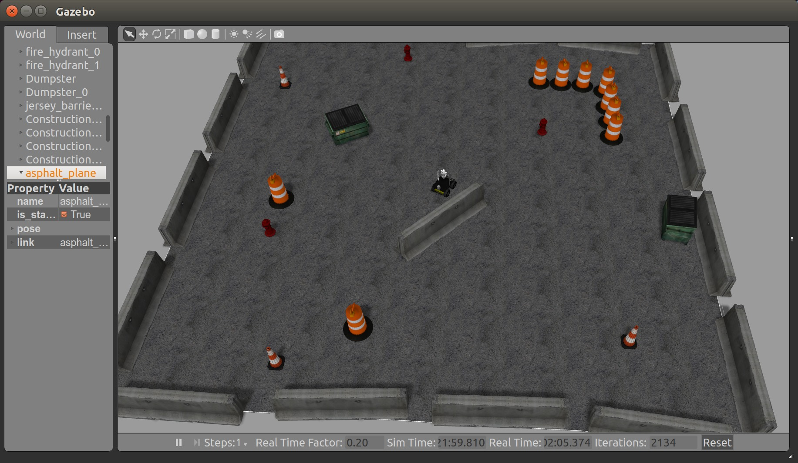
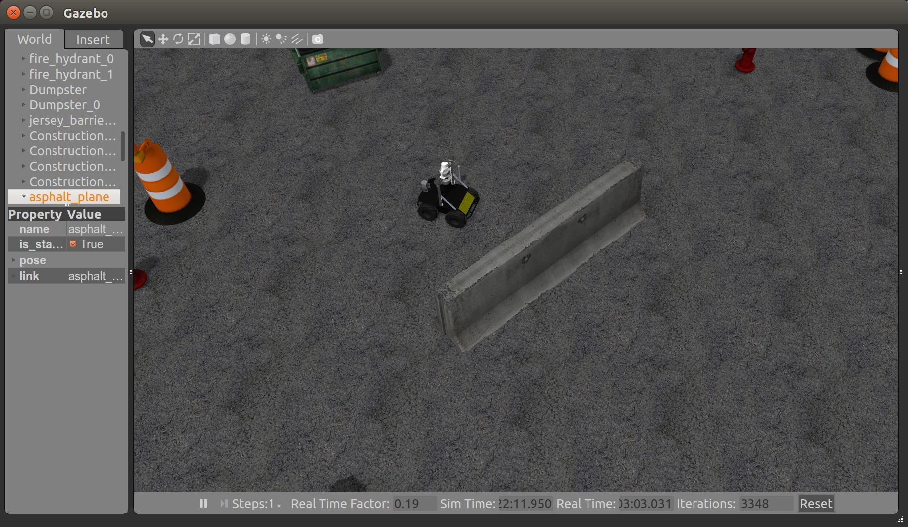

小任务
JOB
- 部署：依照部署指南在自己机器上部署Husky项目，
- 机器人移动控制 在planpen地图(2d)中实现给定点的导航，例如：机器人初始位置为(0,0,0)，给定目标位置为(-1,-5,0)，用C++编写ROS程序控制机器人到达指定地点（忽略朝向）。附录有一些图片展示目标效果。 开发环境：Ubuntu 14.04, ROS版本：indigo
提示：下载好项目代码之后，先看一下ROS入门书前几章，理解一下项目结构，试着用python husky_ws/scripts/XXXX.py 或者roslaunch运行项目程序。 之后可以查看ROS tf教程，仿照里面乌龟机器人的控制方法控制Husky机器人。 如果直接这么做比较困难，可以试着自己编写运行turtlesim的例子
注：本项目诸多过程需要翻墙，请自行使用proxychains+shadowsocks等工具翻墙。
参考文献
CMake基本例子 CMake是C++项目部署程序，而Catkin是基于CMake的，所以有可能需要了解CMake
注：catkin_make和catkin build都可以编译代码，catkin_make是旧版的编译命令。
其他参考文献
附录
自动导航到目标地点。  